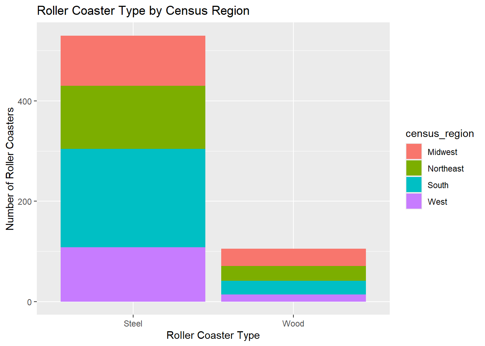
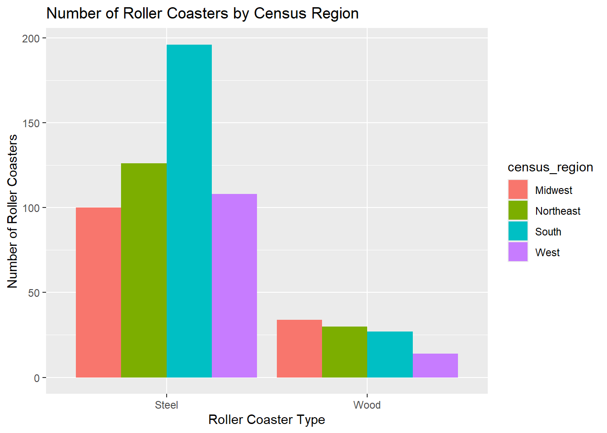

library(httr)
api_key <- Sys.getenv("API_KEY")
output <- GET(
paste0("https://newsapi.org/v2/everything?q=%22black%20hole%22&from=2026-09-01&language=en&pageSize=50&apiKey=", api_key)
)HW 5
Task 1: Querying an API and a Tidy-Style Function1
- Use
GET()fromhttrpackage to return information about a topic that you are interested in that has been in the news lately (store the result as an R object). Note: We can only look 30 days into the past with a free account.
- Parse what is returned and find your way to the data frame that has the actual article information in it (check content). Note the first column should be a list column!
library(jsonlite)
library(tidyverse)── Attaching core tidyverse packages ──────────────────────── tidyverse 2.0.0 ──
✔ dplyr 1.1.4 ✔ readr 2.1.5
✔ forcats 1.0.0 ✔ stringr 1.5.1
✔ ggplot2 3.5.1 ✔ tibble 3.2.1
✔ lubridate 1.9.3 ✔ tidyr 1.3.0
✔ purrr 1.0.2
── Conflicts ────────────────────────────────────────── tidyverse_conflicts() ──
✖ dplyr::filter() masks stats::filter()
✖ purrr::flatten() masks jsonlite::flatten()
✖ dplyr::lag() masks stats::lag()
ℹ Use the conflicted package (<http://conflicted.r-lib.org/>) to force all conflicts to become errorsparsed <- fromJSON(rawToChar(output$content))
news_info <- as_tibble(parsed$articles)
str(news_info)tibble [50 × 8] (S3: tbl_df/tbl/data.frame)
$ source :'data.frame': 50 obs. of 2 variables:
..$ id : chr [1:50] NA NA NA NA ...
..$ name: chr [1:50] "Losalamosreporter.com" "Scientific American" "Gizmodo.com" "Scientific American" ...
$ author : chr [1:50] "View all posts by Los Alamos Reporter" "Mary Randolph" "Gayoung Lee" "Phil Plait" ...
$ title : chr [1:50] "Black Hole Museum: A New Idea for the Los Alamos Community (2025)" "‘Odd couple’ black holes can find each other in space" "That ‘Impossible’ Black Hole Merger May Have Just Been a Cosmic Optical Illusion" "This star has the strangest sky in the galaxy" ...
$ description: chr [1:50] "Ed Grothus in front of the Black Hole. Courtesy photo Some of the items collected and sold by Ed Grothus from t"| __truncated__ "Two studies find signs of strange black hole binary systems" "A record-breaking black hole merger threatened to pull apart astrophysics models—but what if it was just gravit"| __truncated__ "The newfound star S301 orbits the Milky Way’s supermassive black hole so closely that its view of the heavens gets twisted" ...
$ url : chr [1:50] "https://losalamosreporter.com/2025/06/29/black-hole-museum-a-new-idea-for-the-los-alamos-community/" "https://www.scientificamerican.com/article/odd-couple-black-holes-can-find-each-other-in-space/" "https://gizmodo.com/that-impossible-black-hole-merger-may-have-just-been-a-cosmic-optical-illusion-2000809879" "https://www.scientificamerican.com/article/this-star-has-the-strangest-sky-in-the-galaxy/" ...
$ urlToImage : chr [1:50] "https://losalamosreporter.com/wp-content/uploads/2025/06/Screenshot-1343.png" "https://static.scientificamerican.com/dam/asset/c4c00594-998c-4159-a5e6-5dde5ac5335a/saw1026Adva07.jpg?m=1788278220.086&w=1200" "https://gizmodo.com/app/uploads/2025/07/black-hole-merger-1200x675.jpg" "https://static.scientificamerican.com/dam/asset/daf48975-67d4-4636-b400-e02bacc3b10f/lede-black-hole.png?m=1788"| __truncated__ ...
$ publishedAt: chr [1:50] "2026-09-02T17:02:54Z" "2026-09-11T10:45:00Z" "2026-09-10T16:00:55Z" "2026-09-04T10:45:00Z" ...
$ content : chr [1:50] "Ed Grothus in front of the Black Hole. Courtesy photo\r\nSome of the items collected and sold by Ed Grothus fro"| __truncated__ "When two black holes find each other in the vastness of space, they can form a binary odd couple—and it’s more "| __truncated__ "Those following Gizmodos astrophysics coverage may remember GW231123a gravitational-wave signal attributed to a"| __truncated__ "There are a lot of weird stars in the universe, but if I had to pick the very weirdest, it would be S301.\r\nTh"| __truncated__ ...news_info# A tibble: 50 × 8
source$id $name author title description url urlToImage publishedAt content
<chr> <chr> <chr> <chr> <chr> <chr> <chr> <chr> <chr>
1 <NA> Losa… View … Blac… Ed Grothus… http… https://l… 2026-09-02… "Ed Gr…
2 <NA> Scie… Mary … ‘Odd… Two studie… http… https://s… 2026-09-11… "When …
3 <NA> Gizm… Gayou… That… A record-b… http… https://g… 2026-09-10… "Those…
4 <NA> Scie… Phil … This… The newfou… http… https://s… 2026-09-04… "There…
5 <NA> Scie… <NA> Supe… Astronomer… http… https://w… 2026-09-15… "Super…
6 <NA> Gizm… Gayou… This… To answer … http… https://g… 2026-09-09… "In 20…
7 <NA> Scie… <NA> Blac… Scientists… http… https://w… 2026-09-21… "An in…
8 <NA> Thou… Janua… 4 Zo… For a dark… http… https://t… 2026-09-13… "For a…
9 <NA> Univ… Laure… Astr… Black hole… http… https://w… 2026-09-01… "Black…
10 <NA> CNET Joe H… This… The map co… http… https://w… 2026-09-09… "Scien…
# ℹ 40 more rows- Now write a quick function that allows the user to easily query this API. The inputs to the function should be the title/subject to search for (string), a time period to search from (string - you’ll search from that time until the present), and an API key.
news_query_function <- function(subject, from_date, key) {
output <- GET(
paste0(
"https://newsapi.org/v2/everything?q=",
URLencode(subject),
"&from=",
from_date,
"&language=en&pageSize=50&apiKey=",
key
)
)
parsed <- fromJSON(rawToChar(output$content))
as_tibble(parsed$articles)
}Try it out 1
news_query_function(subject = "project 2025", from_date = "2026-08-30", key = api_key)# A tibble: 49 × 8
source$id $name author title description url urlToImage publishedAt content
<chr> <chr> <chr> <chr> <chr> <chr> <chr> <chr> <chr>
1 the-verge The … Jay P… Netf… "Netflix h… http… https://p… 2026-09-14… "<ul><…
2 <NA> Gizm… Ed Ca… A Dr… "The emerg… http… https://g… 2026-09-01… "An em…
3 <NA> Kota… Kenne… How … "The Hundr… http… https://k… 2026-09-01… "The H…
4 cnn CNN Andre… The … "In Januar… http… https://s… 2026-09-02… "In Ja…
5 wired Wired Matt … Forg… "AI labs a… http… https://m… 2026-09-19… "Welco…
6 <NA> Gizm… Jen L… ‘Dun… "The serie… http… https://g… 2026-09-03… "One o…
7 business… Busi… Kathe… Gen … "Burning M… http… https://i… 2026-09-02… "Accor…
8 the-verge The … Emma … Tim … "Expectati… http… https://p… 2026-09-01… "<ul><…
9 <NA> Yaho… By St… Isra… "By Stepha… http… https://s… 2026-09-04… "By St…
10 <NA> Kota… Ethan… Sony… "But what … http… https://k… 2026-09-07… "Killz…
# ℹ 39 more rowsTry it out 2
news_query_function(subject = "nutrition", from_date = "2026-08-31", key = api_key)# A tibble: 48 × 8
source$id $name author title description url urlToImage publishedAt content
<chr> <chr> <chr> <chr> <chr> <chr> <chr> <chr> <chr>
1 business… Busi… Jane … I gr… "A 32-year… http… https://i… 2026-09-08… "Evely…
2 business… Busi… Laure… I'm … "If I were… http… https://i… 2026-09-07… "Costc…
3 business… Busi… Jane … I gr… "A 32-year… http… https://s… 2026-09-08… "Evely…
4 bbc-news BBC … Sarah… Are … "Women hav… http… https://i… 2026-09-09… "Howev…
5 wired Wired Jorge… Cock… "Every yea… http… https://m… 2026-09-08… "Achie…
6 business… Busi… Kim S… A gu… "Beyond it… http… https://i… 2026-09-13… "Emily…
7 <NA> Gizm… Ed Ca… Auti… "People wi… http… https://g… 2026-09-10… "Peopl…
8 <NA> News… Josie… GLP-… "Researche… http… https://s… 2026-09-12… "(News…
9 <NA> BBC … BBC Deep… "The gover… http… https://s… 2026-09-13… "There…
10 business… Busi… Amand… 3 bi… "Maye Musk… http… https://i… 2026-09-17… "Maye …
# ℹ 38 more rowsTask 2: Summarizing Roller Coaster Data
library(janitor)Warning: package 'janitor' was built under R version 4.3.3
Attaching package: 'janitor'The following objects are masked from 'package:stats':
chisq.test, fisher.testcoasters <- read_csv(
"https://www4.stat.ncsu.edu/online/datasets/635USrollercoasters.csv"
) |>
clean_names() |>
mutate(
age_group = factor(age_group),
census_Region = factor(census_region),
scale = factor(scale),
type = factor(type),
design = factor(design),
make = factor(make),
state = factor(state),
inversions = factor (inversions)
)Rows: 635 Columns: 21
── Column specification ────────────────────────────────────────────────────────
Delimiter: ","
chr (12): Coaster, Park, City, State, Census Region, AgeGroup, Scale, Type, ...
dbl (9): Year Opened, TopSpeed, MaxHeight, Drop, Length, Duration, # of Inv...
ℹ Use `spec()` to retrieve the full column specification for this data.
ℹ Specify the column types or set `show_col_types = FALSE` to quiet this message.State, Make, Design, Type, Scale, Census Region, AgeGroup, Scale, Inversions were converted to factors.
- Look at how the data is stored and see if everything makes sense
glimpse(coasters)Rows: 635
Columns: 22
$ coaster <chr> "Adrenaline Peak", "Adventure Express", "Afterbur…
$ park <chr> "Oaks Amusement Park", "Kings Island", "Carowinds…
$ city <chr> "Portland", "Mason", "Charlotte", "Athol", "Tampa…
$ state <fct> Oregon, Ohio, North Carolina, Idaho, Florida, Vir…
$ census_region <chr> "West", "Midwest", "South", "West", "South", "Sou…
$ year_opened <dbl> 2018, 1991, 1999, 2008, 2010, 1997, 1998, 1981, 2…
$ age_group <fct> 3:Newest, 2:Recent, 2:Recent, 3:Newest, 3:Newest,…
$ top_speed <dbl> 45.0, 35.0, 62.0, 65.6, 22.0, 67.0, 35.0, 66.0, 4…
$ max_height <dbl> 72.0, 63.0, 113.0, 191.6, 25.0, 195.0, 64.0, 127.…
$ scale <fct> Extreme, Thrill, Extreme, Extreme, Family, Extrem…
$ type <fct> Steel, Steel, Steel, Steel, Steel, Steel, Steel, …
$ design <fct> Sit Down, Sit Down, Inverted, Inverted, Sit Down,…
$ drop <dbl> 70.0, 47.0, 110.0, 177.0, 22.5, 170.0, 20.0, 147.…
$ length <dbl> 1050.0, 2963.0, 2956.0, 1204.0, 628.0, 3828.0, 14…
$ duration <dbl> 66, 140, 167, 92, 47, 190, 100, 143, 110, 110, 18…
$ inversions <fct> Yes, No, Yes, Yes, No, Yes, No, No, No, Yes, No, …
$ number_of_inversions <dbl> 3, 0, 6, 3, 0, 6, 0, 0, 0, 4, 0, 0, 0, 0, 0, 0, 0…
$ make <fct> "Gerstlauer Amusement Rides GmbH", "Arrow Dynamic…
$ latitude <dbl> 45.5079, 39.3601, 35.2600, 47.9224, 27.9961, 37.3…
$ longitude <dbl> -122.6908, -84.3099, -80.8042, -116.6860, -82.582…
$ boundary <chr> "{\"type\":\"Feature\",\"properties\":{\"CENSUSAR…
$ census_Region <fct> West, Midwest, South, West, South, South, Northea…summary(coasters) coaster park city state
Length:635 Length:635 Length:635 California : 75
Class :character Class :character Class :character Pennsylvania: 51
Mode :character Mode :character Mode :character Florida : 48
New York : 38
Texas : 38
New Jersey : 37
(Other) :348
census_region year_opened age_group top_speed
Length:635 Min. :1920 1:Older : 69 Min. : 6.00
Class :character 1st Qu.:1995 2:Recent:190 1st Qu.: 28.50
Mode :character Median :2002 3:Newest:376 Median : 45.00
Mean :1999 Mean : 42.24
3rd Qu.:2013 3rd Qu.: 55.00
Max. :2020 Max. :128.00
NA's :74
max_height scale type design drop
Min. : 5.0 Extreme:269 Steel:530 Bobsled : 4 Min. : 0.00
1st Qu.: 28.0 Family :178 Wood :105 Flying : 9 1st Qu.: 25.00
Median : 64.3 Kiddie : 28 Inverted : 42 Median : 70.00
Mean : 76.8 Thrill :160 Sit Down :560 Mean : 77.18
3rd Qu.:109.0 Stand Up : 4 3rd Qu.:108.50
Max. :456.0 Suspended: 7 Max. :418.00
NA's :8 Wing : 9 NA's :128
length duration inversions number_of_inversions
Min. : 48 Min. : 20 No :465 Min. :0.0000
1st Qu.: 900 1st Qu.: 70 Yes:170 1st Qu.:0.0000
Median :1490 Median :101 Median :0.0000
Mean :1938 Mean :106 Mean :0.9213
3rd Qu.:2800 3rd Qu.:130 3rd Qu.:1.0000
Max. :7359 Max. :540 Max. :8.0000
NA's :33 NA's :66
make latitude longitude
Vekoma : 56 Min. :26.55 Min. :-122.94
Bolliger & Mabillard: 55 1st Qu.:34.47 1st Qu.: -97.15
Arrow Dynamics : 44 Median :38.51 Median : -84.31
Zamperla : 36 Mean :37.69 Mean : -89.46
E&F Miler Industries: 34 3rd Qu.:40.97 3rd Qu.: -77.46
(Other) :374 Max. :47.92 Max. : -70.39
NA's : 36
boundary census_Region
Length:635 Midwest :134
Class :character Northeast:156
Mode :character South :223
West :122
Its easy to see the summary stats (spread etc) and what type of data the columns are using glimpse() and summary(). Specifically the factors are likely easier to use when creating the contingency tables.
5. Document any missing values in the data
colSums(is.na(coasters)) coaster park city
0 0 0
state census_region year_opened
0 0 0
age_group top_speed max_height
0 74 8
scale type design
0 0 0
drop length duration
128 33 66
inversions number_of_inversions make
0 0 36
latitude longitude boundary
0 0 0
census_Region
0 TopSpeed, MaxHeight, Drop, Length, Duration, Make have missing values, and the Drop column has the most missing values by far.
- Create a one way contingency, a two-way contingency table, and a three-way contingency table for some of the factor variables you created previously. Use table() to accomplish this.
- Interpret a number from each resulting table (that is, pick out a value produced and explain what that value means.)
# One-way
table(coasters$type)
Steel Wood
530 105 There are 105 total wood coasters in the dataset.
# Two-way
table(coasters$type, coasters$census_region)
Midwest Northeast South West
Steel 100 126 196 108
Wood 34 30 27 14There are 30 wooden coasters in the Northeast Census region in the data set.
# Three-way
table(coasters$type, coasters$census_region, coasters$scale), , = Extreme
Midwest Northeast South West
Steel 42 50 79 45
Wood 19 12 13 9
, , = Family
Midwest Northeast South West
Steel 26 43 65 29
Wood 6 6 3 0
, , = Kiddie
Midwest Northeast South West
Steel 8 6 6 7
Wood 0 1 0 0
, , = Thrill
Midwest Northeast South West
Steel 24 27 46 27
Wood 9 11 11 5There are 3 wooden coasters in the Census defined South region classified as family level thrill.
- Create a conditional two-way table using table(). That is, condition on one variable’s setting and create a two-way table. Do this using two different methods:
- Once, by subsetting the data (say with filter()) and then creating the two-way table
coasters |>
filter(scale == "Thrill") |>
with(table(type, census_region)) census_region
type Midwest Northeast South West
Steel 24 27 46 27
Wood 9 11 11 5- Once, by creating a three-way table and subsetting it
three_way_subsect <- table(
coasters$type,
coasters$census_region,
coasters$scale
)
three_way_subsect <- three_way_subsect[, , "Thrill"]
three_way_subsect
Midwest Northeast South West
Steel 24 27 46 27
Wood 9 11 11 5- Create a two-way contingency table using group_by() and summarize() from dplyr. Then use pivot_wider() to make the result look more like the output from table().
coasters |>
group_by(type, census_region) |>
summarize(count = n(), .groups = "drop") |>
pivot_wider(
names_from = census_region,
values_from = count,
values_fill = 0
)# A tibble: 2 × 5
type Midwest Northeast South West
<fct> <int> <int> <int> <int>
1 Steel 100 126 196 108
2 Wood 34 30 27 14Looks the same as two way contingency table from 6, except it’s a tibble
- Create a stacked bar graph and a side-by-side bar graph. Give relevant x and y labels, and a title for the plots.
#stacked
ggplot(coasters, aes(x = type, fill = census_region)) +
geom_bar() +
labs(
x = "Roller Coaster Type",
y = "Number of Roller Coasters",
title = "Roller Coaster Type by Census Region"
)
#side by side
ggplot(coasters, aes(x = type, fill = census_region)) +
geom_bar(position = "dodge") +
labs(
x = "Roller Coaster Type",
y = "Number of Roller Coasters",
title = "Number of Roller Coasters by Census Region"
)